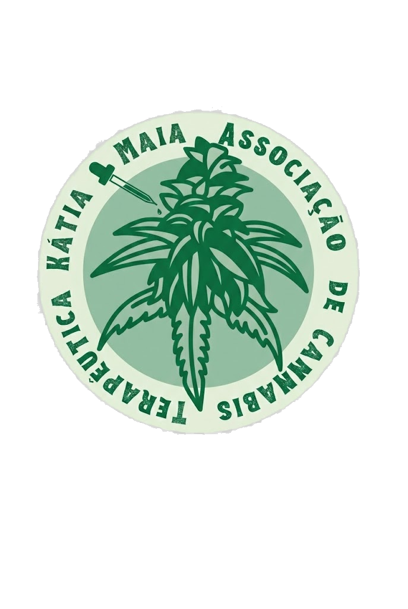

Em torno da história de vida e luta de Kátia Maia, um grupo de pacientes canábicos residente principalmente no Agreste e Sertão pernambucanos se uniu para criar uma associação em defesa do direito à saúde.
Kátia Maia iniciou seu tratamento com produtos artesanais derivados da Cannabis sativa L. em 2015. Até então, Kátia apresentava sintomas de fibromialgia e artrite reumatóide que a alopatia só conseguia aprofundar. Os resultados foram tão eficazes que ela queria compartilhar com todo mundo que precisasse da planta.
Infelizmente, Kátia já não está mais entre nós, mas seus desejos de tornar o tratamento acessível a todas as pessoas que dele precisem e de libertar a planta do estigma criado por um século de proibição nos contagiou.
Neste rumo, a Associação de Cannabis Terapêutica Kátia Maia acolhe pacientes e promove mutirões de atendimento médico, cria e participa de espaços de diálogo e aprendizagem sobre a planta.
Nossa luta é pela construção de um modelo de legalização da Cannabis sativa L. com participação popular, reparação histórica e acesso universal aos seus derivados. É também pela valorização dos saberes e do trabalho de cultivo e guarda de sementes por agricultores familiares nordestinos.
Contato
- E-mail: actkatiamaia@gmail.com
- Fone / WhatsApp: (87) 98159-0609 WhatsApp